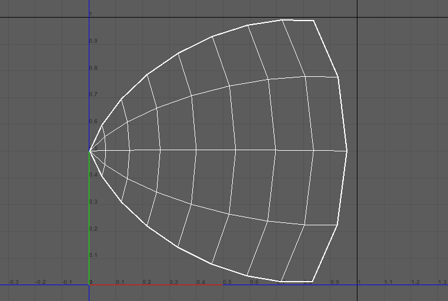
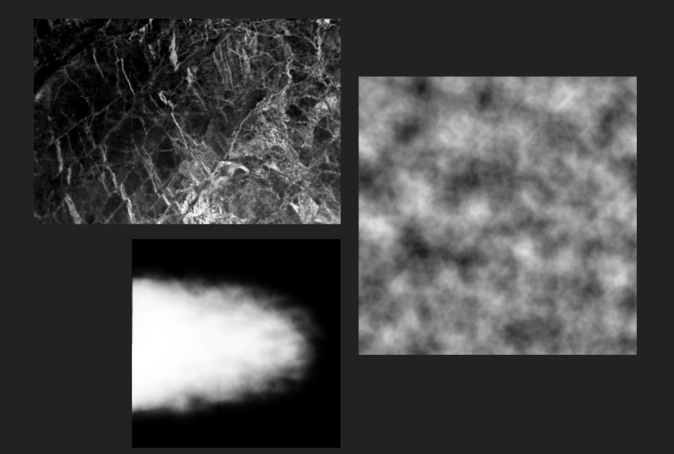
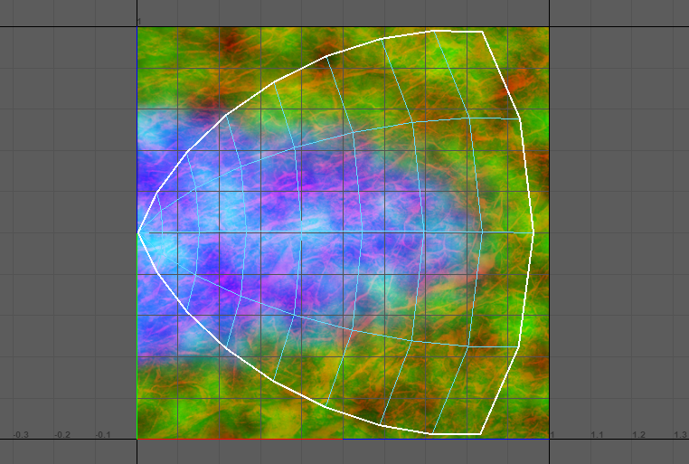
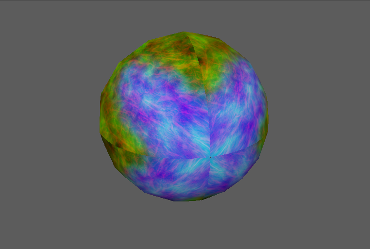
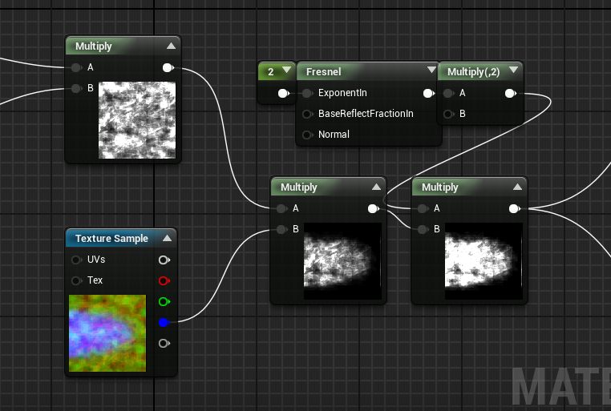
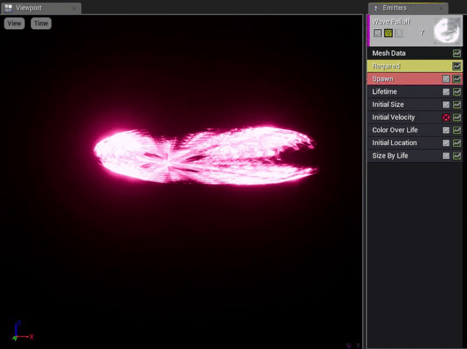

All Projects
About Myself
An aspiring game developer who specializes in game effects. I was interested in games since the first Playstation; playing titles like Crash Bandicoot and Twisted Metal. The worlds that the games took me through we’re all so different but gave me the same great sense of satisfaction after playing them. For me, the spectacular explosions and particles made the gameplay so much more exciting and impactful and for good reason. The artists had a great sense of how the characteristics of the world could be expressed in such short, concise, and visual ways; which is what I try to express through my own work.
Contact Me
Sword Summoning

This effect was designed for an attack ability that summons a sword that would fly towards the target after being created. To make this effect I needed to make use of reference images, adapted animation principles, and a few tricks within the UE4 particle editor.

The assets I would need gather included the texture alpha of the magic circle and halo ring, as well as a sword mesh. The sword mesh was provided by a member of my team for project this was for and so what was left for me were the texture alphas.
So I started with the magic circle by gathering reference images and analyzing different types that I would come across. The common elements that I would see in most magic circles are basic geometric shapes like stars and circles, radial patterns, symbols, and text that is wrapped radially. With that in mind, I constructed a magic circle and afterwards made a simple halo ring alpha.

Putting these elements together into the particle editor was a trial and error process to get things to flow just right. However, there were two major stages of the effect that I used to base the entire effect around; instantiation, maintain, and end.
I used these principles to inform the player that the attack when the attack is starting and when the attack was going to be sent towards them.
The instantiation of the effect included the halo ring to show that initial burst of energy from summoning the sword. Again, this was to let the player know that the attack started.

To show the progression of the effect from beginning of summoning to the end before it flies toward player I used the magic circle and what I like to call a energy particle gatherer. The magic circle would increase in glowing intensity and then fade to show that the attack is almost ready. The energy particle gatherer would follow shortly after that and disappear to show the attack is done and will attack shortly.
The effect was really fun for me to make as it was inspired by one of my favorite animes Fate Stay Night where the character projects thousands of swords to attack his enemy with. Creating my own version of it was challenging as it was the first time I started using reference images instead of using an alpha that was already created. The experience was really rewarding and it really gave me some thought as to how I could improve my iteration process and workflow for my future work.
Sword Slash Wave

The sword slash wave effect was created as part of a larger full semester game project. Creating this effect had three stages which consisted of a creating the mesh, creating the texture, then finally combining the two into a particle system within Unreal Engine’s Cascade editor.

I began with the model first which was simple and quick to do. I used maya and used the sphere tool to create the base of the mesh and then cut that mesh in half.
I divided that half into quarters so I can plan out my texture using the UVs and figure out the beginning and end points of the texture.

For the material I went looking for images of rocks that would give my effect more broken up and disrupted feel. To breathe more life into the effect I also created a cloud texture that I would use to multiply on top of the other textures I had. For the base of the wave effect, I masked out a shape that was like a jagged mountain and applied multiple versions of that on top of each other along with a blur and cloud effect to soften up the edges.
The effect was really fun for me to make as it was inspired by one of my favorite animes Fate Stay Night where the character projects thousands of swords to attack his enemy with. Creating my own version of it was challenging as it was the first time I started using reference images instead of using an alpha that was already created. The experience was really rewarding and it really gave me some thought as to how I could improve my iteration process and workflow for my future work.

Taking each of those textures I combined them into a single image through placing their alphas on their respective RGB channels for file efficiency.

I brought the finished texture back into Maya and applied it to the mesh I made to double check that everything appeared as it should and if I should make any changes to the UVs or texture.

The assets were then taken into Unreal Engine at this point and I started creating the material using UE4’s visual material editor. I separated the channels and added panners to my rock and cloud texture and multiplied those together to give the illusion of energy movement. After combining it with the base energy tail, I applied a fresnel effect to control the falloff of the wave. This was to make the effect look like it dissipates more towards the end of the tail of the effect.

The last step was combining the mesh with the new material in a particle system and applying color and tweaking the parameters of the particle system until I was satisfied.